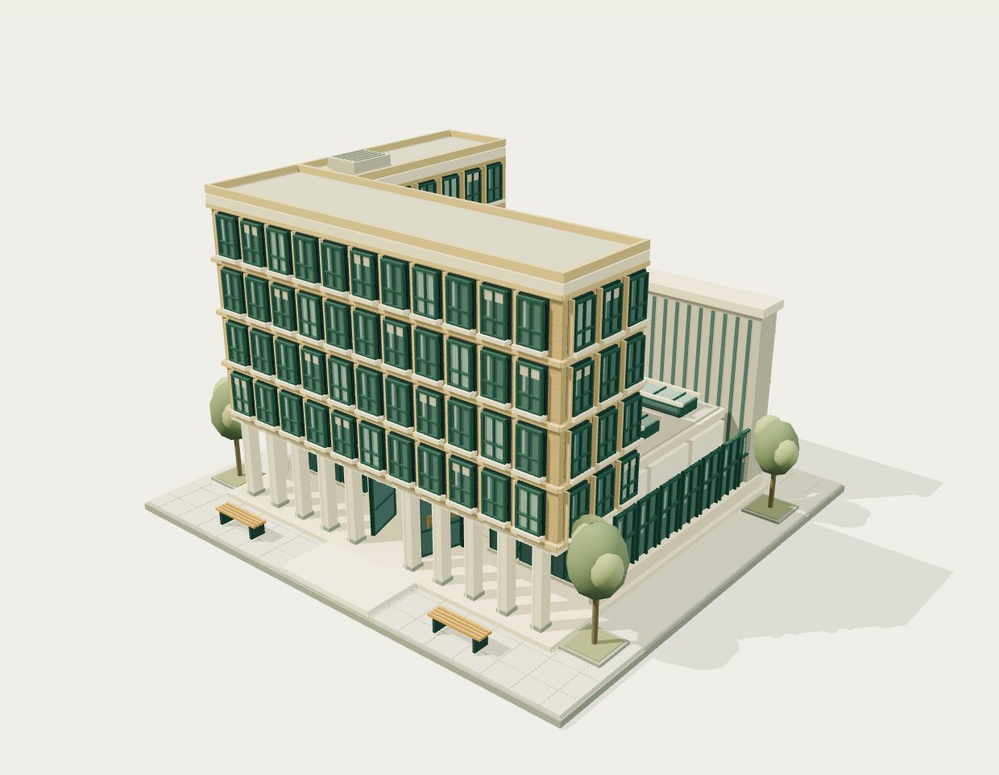

A little world,
mostly mine.
Four familiar places.
Come have a look around.
A personal atlas, not a map to scale.MilanTbilisi
Unfolding the world…
The 3D view is unavailable. You can still explore the places below.

Choose a place · drag to orbit · scroll to get closer